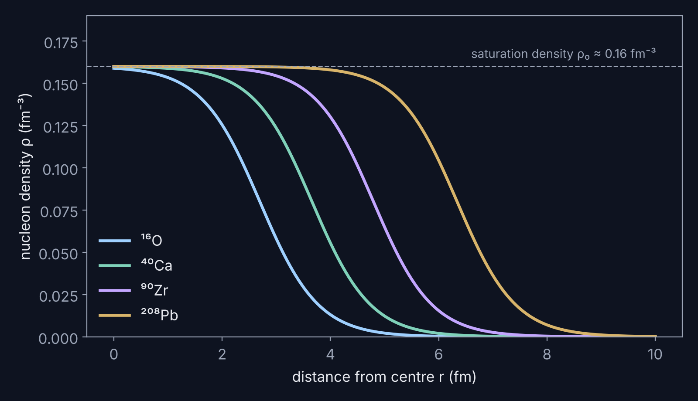
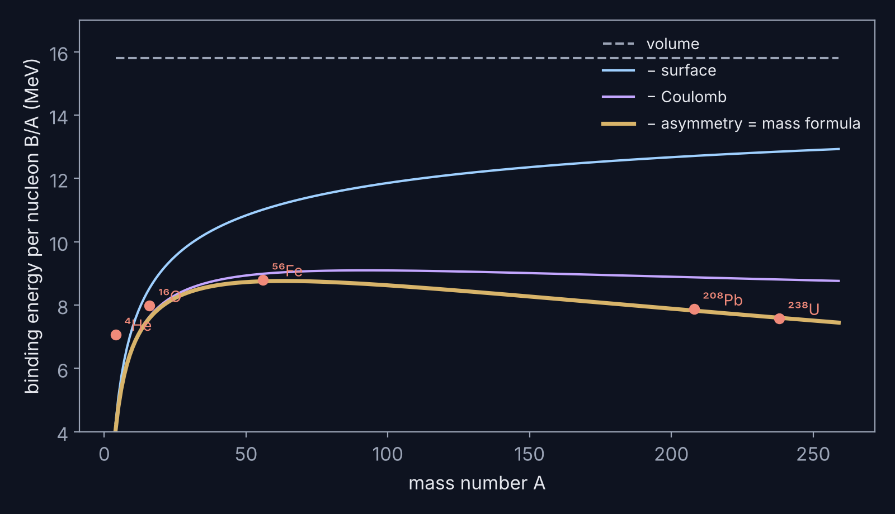
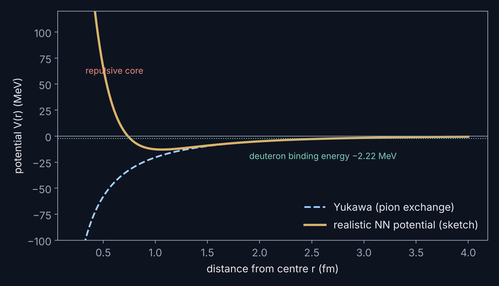
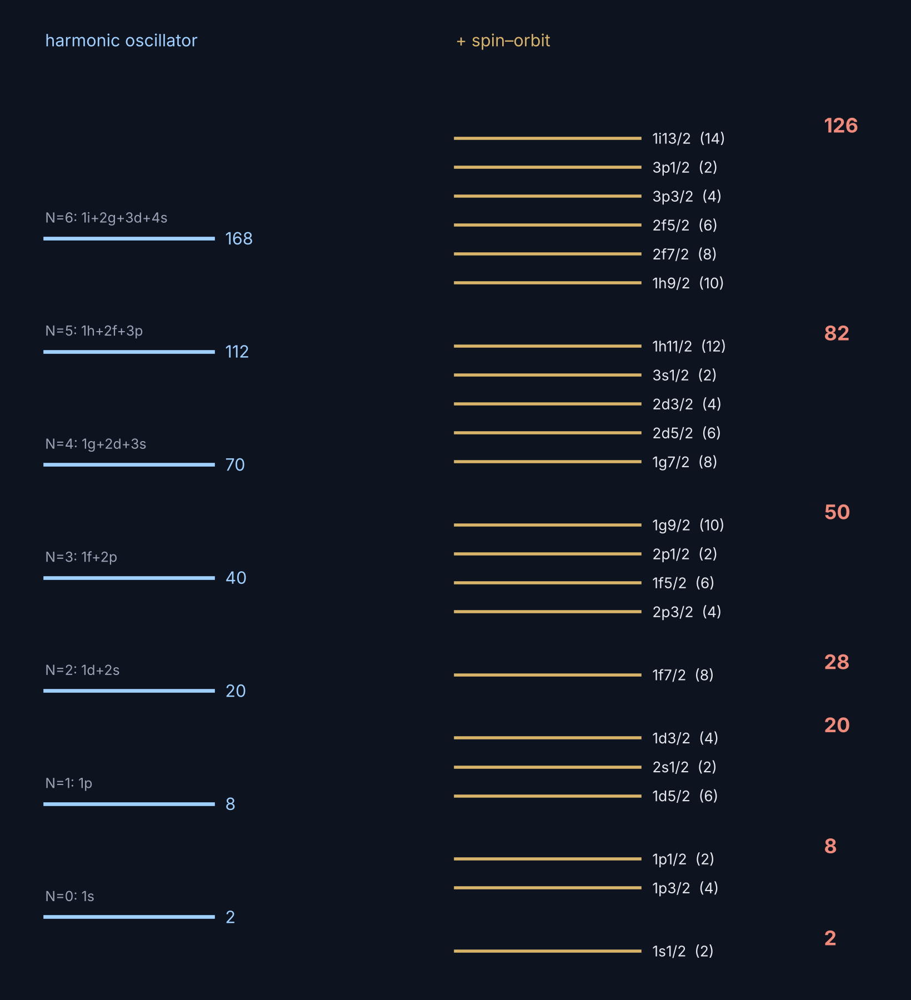

The close-packed nucleus
Rutherford's scattering experiments showed in 1911 that the nucleus is small. How small, and how matter is distributed inside it, was shown by Robert Hofstadter at Stanford in the 1950s. He fired electrons with energies of several hundred MeV at nuclei. The electron does not feel the nuclear force, only the electric charge, and its wavelength was short enough to "see" how the charge is distributed. The result was surprisingly simple: all nuclei have an almost constant density in the middle, which falls to zero over a surface zone a couple of femtometres thick. The distribution is well described by a Fermi function
Hofstadter received the Nobel Prize in 1961. The figure shows the distribution for four nuclei. The remarkable thing is that the plateau lies at the same height for all of them: the saturation density

This is exactly what one sees in a liquid or in a heap of close-packed spheres: add more spheres and the heap grows, but it does not get denser. The volume is proportional to the number of nucleons, $V \propto A$, and so the radius is $R \propto A^{1/3}$. A lead nucleus with 208 nucleons is only $\sqrt[3]{208/16} \approx 2.35$ times as wide as an oxygen nucleus.
The distance between neighbours in the nucleus is $\rho_0^{-1/3} \approx 1.8$ fm. A proton itself has a charge radius of 0.84 fm. Treating the nucleons as spheres of that radius, they fill about 40 % of the nuclear volume – less than close-packed spheres (74 %), but so densely that the nucleons almost touch. The nucleus is a close-packed substance, not a thin gas of point particles.
Saturation: why the binding energy grows with A
If each nucleon attracted all the others, the number of pairs would be $A(A-1)/2$ and the binding energy would grow as $A^2$. But measurements show that the binding energy per nucleon is almost constant, about 8 MeV, from oxygen to uranium. Each nucleon therefore feels only its nearest neighbours. The force saturates, as in a water drop: a water molecule binds only to those it touches.
The picture of close-packed spheres also explains the next term of the mass formula. In a packing of spheres each sphere inside the heap has 12 neighbours, but the spheres at the surface lack some of them. So surface nucleons are bound more weakly, and the binding energy gets a negative surface term proportional to the surface area, $4\pi R^2 \propto A^{2/3}$. These are the first two terms of Weizsäcker's mass formula:
| Term | Typical value | Physical origin |
|---|---|---|
| $a_V$ | 15.8 MeV | each nucleon binds to its neighbours (saturation) |
| $a_S$ | 18.3 MeV | surface nucleons lack neighbours |
| $a_C$ | 0.714 MeV | the electric repulsion of the protons, which does not saturate |
| $a_A$ | 23.2 MeV | the Pauli principle: neutrons and protons fill their own levels |
| $\delta$ | $\approx 12/\sqrt{A}$ MeV | nucleons of the same kind form pairs |

Note the difference between the Coulomb term and the others. The electric force has infinite range, so each proton repels all the others – which is why the term grows as $Z^2$, not $Z$. Precisely because the nuclear force saturates and the electric force does not, arbitrarily heavy nuclei cannot exist. Beyond uranium the repulsion becomes so large that nuclei fission spontaneously or decay by alpha emission.
The Fermi gas: nucleons in a box
Why does the nucleus not collapse, when the nucleons attract each other? A first answer comes from the Pauli principle. Nucleons are fermions, and two of the same kind cannot occupy the same state. Treating the nucleus as a box of volume $V$ in which $A/2$ protons and $A/2$ neutrons move freely, they must fill the momentum states up to a Fermi momentum $p_F = \hbar k_F$:
The factor 2 is the two spin directions. The Fermi energy becomes
and the average kinetic energy of the nucleons is $\tfrac35 E_F \approx 22$ MeV. The nucleons thus rush about inside the nucleus at about a fifth of the speed of light. Since the last nucleon is bound by about 8 MeV, the potential well must be $37 + 8 \approx 45$ MeV deep. The Fermi gas also explains the asymmetry term: if a nucleus has more neutrons than protons, the extra neutrons must be put in higher levels, and that costs energy.
The short-range nuclear force
The nuclear force is the strongest force we meet in nuclear physics, but it has a strange property: it is practically zero at a distance of 3–4 fm. Two protons in a nucleus lie only a couple of femtometres apart, and at that distance the electric repulsion is about $e^2/(4\pi\varepsilon_0 r) \approx 1.44\ \mathrm{MeV\,fm}/2\ \mathrm{fm} \approx 0.7$ MeV. The nuclear force is many times stronger. Yet even between two nuclei that almost touch it is not felt.
Yukawa's idea
In 1935 the 28-year-old Japanese physicist Hideki Yukawa proposed an explanation. The electric force is carried by photons, which are massless and can therefore reach infinitely far. If the nuclear force is carried by a particle of mass $m$, it can only exist "on loan": by the uncertainty relation the energy $mc^2$ can be borrowed for a time $\Delta t \approx \hbar/(mc^2)$, and in that time the particle can travel at most
The range of the force thus determines the mass of the particle. Yukawa derived that the potential between two nucleons should then have the form
At short distances it looks like a Coulomb potential, but the exponential factor kills it quickly: at 5 fm it is weakened by a factor $e^{-5/1.41} \approx 0.03$ beyond the $1/r$. The particle, the pion, was found in cosmic rays by Cecil Powell in 1947 with a mass of 140 MeV/$c^2$, and Yukawa received the Nobel Prize in 1949 – the first Japanese laureate.

The repulsive core
Proton scattering experiments showed in 1951 (Robert Jastrow) that the force changes sign at very short distances: below about 0.5 fm the nucleons repel each other strongly. Together with the Pauli principle it is the repulsive core that makes nuclear matter saturate at $\rho_0$. The nucleons cannot be squeezed closer, just like the spheres in a packing. Today this is understood in quantum chromodynamics: when the quarks of two nucleons overlap, the Pauli principle for the quarks and the exchange of heavier mesons (the ω meson) give a repulsion.
The force depends on spin – and not on charge
The nuclear force is not simply a function of distance. It is stronger when the two nucleons' spins are parallel, and it has a tensor term that depends on the angle between the spins and the line joining them – the same kind of term one knows from two bar magnets. On the other hand it is almost the same between proton and proton, proton and neutron, and neutron and neutron. Werner Heisenberg proposed in 1932 that proton and neutron can be seen as two states of the same particle, the nucleon, with a new quantum quantity, isospin. Mirror nuclei such as ³H and ³He, where protons and neutrons are swapped, have almost the same energy levels – the difference is precisely the Coulomb energy.
The deuteron – the only bound two-nucleon system
The simplest nucleus, the deuteron (a proton and a neutron), is a good laboratory for the nuclear force. It has only one bound state, with binding energy 2.224 MeV, spin 1 and a radius of about 2.1 fm – large compared with the range of the force. The deuteron is so loosely bound that the nucleons spend most of the time outside each other's range. There is no bound state of two neutrons or two protons: with opposite spins, as the Pauli principle requires for two identical nucleons in the ground state, the force is just too weak.
One can estimate how deep the well must be at least. For a spherical square well of radius $R$ and depth $V_0$ there is a bound state only if the wave function can bend through a quarter wavelength inside the well, i.e. $kR \ge \pi/2$, where $\hbar^2k^2/2\mu = V_0$ and $\mu = m/2$ is the reduced mass:
The actual depth, fitted to the binding energy, is about 35 MeV – only a little above the limit. The deuteron is bound by a hair's breadth. It also has a small electric quadrupole moment: it is slightly elongated. That can be explained only if the wave function contains about 4–6 % D state (angular momentum 2), and it is the direct proof of the tensor term in the nuclear force.
Magic numbers and the shell model
The mass formula describes the broad features, but it misses something. Nuclei with particular numbers of protons or neutrons – 2, 8, 20, 28, 50, 82 and 126 – are bound more strongly than the formula says, have more stable isotopes and are harder to excite. Eugene Wigner jokingly called them the magic numbers, and the name stuck. They recall the electron numbers of the noble gases, 2, 10, 18, 36, 54, 86, and that is no accident: nucleons too arrange themselves in shells.
First attempt: the harmonic oscillator
Inside the nucleus each nucleon feels an average field from the others. Because the density is constant, the potential is bowl-shaped, and the simplest bowl is the harmonic oscillator, $V(r) = \tfrac12 m\omega^2 r^2$. Its energy levels are $E_N = \hbar\omega(N + \tfrac32)$, and level $N$ holds
Added up, this gives the shells 2, 8, 20, 40, 70, 112, 168. The first three fit – but then it goes wrong. Nature says 28, 50, 82, 126.
Spin–orbit coupling
The solution was found in 1949 by Maria Goeppert Mayer in Chicago and independently by Otto Haxel, Hans Jensen and Hans Suess in Heidelberg. According to a well-known anecdote, Enrico Fermi asked Goeppert Mayer in passing whether there was any evidence of spin–orbit coupling. She saw at once that it was the key. Just as for the electron in an atom, the nucleon's spin $\vec s$ couples to its orbital angular momentum $\vec l$, but in the nucleus the coupling is much stronger and has the opposite sign: the state with $j = l + \tfrac12$ lies lowest.
The splitting grows with $l$. For the highest $l$ in each oscillator shell it becomes so large that the level with $j = l + \tfrac12$ is pushed down into the shell below. The level $1f_{7/2}$ holds $2j + 1 = 8$ nucleons and forms its own small shell: $20 + 8 = 28$. In the same way $1g_{9/2}$ (10 places) drops into the preceding shell, so $40 + 10 = 50$; $1h_{11/2}$ (12) gives $70 + 12 = 82$; and $1i_{13/2}$ (14) gives $112 + 14 = 126$. All seven magic numbers come out of one simple assumption.

Goeppert Mayer and Jensen received the Nobel Prize in 1963 – she as the second woman in physics, after Marie Curie. The shell model explains not only the magic numbers but also the spin and magnetic moment of nuclei with one nucleon outside a closed shell. ¹⁷O has one neutron in $1d_{5/2}$ outside the doubly magic ¹⁶O, and it does indeed have spin $\tfrac52$.
Traces of the magic numbers in nature
- Many stable isotopes. Tin, with the magic $Z = 50$, has ten stable isotopes – more than any other element. Calcium ($Z = 20$) has six.
- Jumps in the separation energy. The energy needed to remove one neutron drops sharply just after a magic number – exactly as the ionisation energy drops from a noble gas to the next alkali metal.
- Doubly magic nuclei. ⁴He, ¹⁶O, ⁴⁰Ca, ⁴⁸Ca and ²⁰⁸Pb are unusually stable and spherical. Helium-4 is so tightly bound that heavy nuclei would rather emit a whole helium nucleus (alpha decay) than single nucleons. Lead-208 is the end of the thorium decay chain.
- Gold and platinum. In neutron-star mergers nuclei capture neutrons rapidly (the r-process) and pile up at the magic neutron numbers $N = 50$, 82 and 126. After decay this gives three peaks in the abundance of the elements around $A \approx 80$, 130 and 195 – the last is platinum and gold. The gold in a wedding ring bears the stamp of the magic number 126.
- Spherical and deformed shapes. Nuclei with closed shells are spherical. Midway between shells the nuclei become elongated and rotate, as Aage Bohr and Ben Mottelson showed in Copenhagen (see the collective model).
When the magic numbers move
For many years the magic numbers were thought to be universal. But with accelerators that can make nuclei far from the line of stability, it has been found that they can disappear and new ones can appear. At $N = 20$, magnesium-32 is not spherical as it should be – here lies an "island of inversion", where levels from the next shell intrude. On the other hand calcium-52 and calcium-54 behave as if $N = 32$ and $N = 34$ were magic (RIKEN, Japan, 2013). The reason is that the tensor term of the nuclear force shifts the levels when the ratio of protons to neutrons changes.
Out in the heavy region the shell model predicts an island of stability around $Z \approx 114$–120 and $N = 184$, where superheavy nuclei could live much longer than their neighbours. Element 114 is called flerovium after the laboratory in Dubna, where it was made by firing doubly magic calcium-48 at plutonium. No one has yet reached $N = 184$.
From atomic nucleus to neutron star
Nuclear matter at saturation density is not only a property of small nuclei. A neutron star is in a sense one gigantic atomic nucleus, held together by gravity instead of the nuclear force: about $10^{57}$ nucleons, mostly neutrons, with a radius of about 12 km. At the centre the density is two to three times $\rho_0$. How massive a neutron star can be before it collapses to a black hole depends on how stiff nuclear matter is – on the repulsive core of the nuclear force. The gravitational waves from the neutron-star merger of 2017 (GW170817) have given the first direct measurements of it.
Assuming the constant density $\rho_0$, the rule $R \propto N^{1/3}$ – the same as for nuclei – gives a radius of 14 km. Gravity squeezes the star a little more, but the order of magnitude is right.
Problems
Answer: $R \approx 7.0$ fm; $\rho \approx 197\cdot1.66\cdot10^{-27}\ \mathrm{kg}/(\tfrac43\pi(7.0\cdot10^{-15}\ \mathrm{m})^3) \approx 2.3\cdot10^{17}$ kg/m³; a teaspoonful weighs about $1\cdot10^{12}$ kg – a billion tonnes.
Answer: $a = \hbar c/(m_Wc^2) = 197\ \mathrm{MeV\,fm}/80\,400\ \mathrm{MeV} \approx 0.0025$ fm – about a thousandth of the size of a proton. That is why the weak force is "weak".
Answer: In ⁴¹Ca the last neutron sits alone in $1f_{7/2}$: spin $\tfrac72$. In ²⁰⁹Bi the last proton sits alone outside $Z = 82$, in $1h_{9/2}$: spin $\tfrac92$. Both agree with measurement.
Further reading
- Kenneth S. Krane: Introductory Nuclear Physics (Wiley 1988) – chapters 4 and 5 on the nuclear force and the shell model
- Maria Goeppert Mayer: "The shell model", Nobel Lecture 1963 (nobelprize.org)
- Hideki Yukawa: "On the interaction of elementary particles", Proc. Phys.-Math. Soc. Japan 17 (1935)
- Aage Bohr and Ben Mottelson: Nuclear Structure I–II (1969, 1975)
- Further on mhgfysik.dk: Nuclear physics – the heart of the atom, Particle physics and group theory